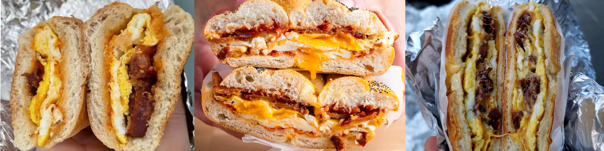

A bacon egg and cheese is a New York staple, but over the past few years many people are struggling to keep up with the cost. Back in my day, 5 dollars could get you a roll, an arizona, and candy. But now? Can't even get 2/3rds of a sandwhich. $6.50. Outrageous. That's why I'm going to teach you how to make it at home. It's probably more expensive, but less people buying from delis may result in a lower price.
You're only going to need a few ingredients, most you probably already have in your fridge
This is necessary to get the most out of your sandwhich, but if you have an aversion to pork, try beef bacon instead. Avoid turkey bacon or other vegan options
Skip the Kraft slices, but make sure the real cheese you get is radioactive orange, not yellow or white.
It may be difficult to pinpoint the exact bread, just walk around your supermarket's fresh bread section
Grab a frying pan, set it on the stove and turn it to high. Immediately throw on 7 strips of bacon, and allow it to fry until it's as crisp or chewy to your liking. remember to flip it when the other side looks good.
Take out the bacon, but don't turn off the stove. Whip 4 eggs minimum, add salt and whatever pepper you like. You're going to use that oil the bacon shed to fry your eggs. Lower the heat to medium low, pour in the eggs, and cover the frying pan with a lid. Once the surface is more solid than liquid, use the largest spatula you own to flip the eggs, or throw it in the air like a pancake if you're him. At this point you can move on to the bread.
Cut your bread in half longsway, but make it like a hot dog bun, not two peices of bread. Shave off some of your cheese as the first layer. fold your egg into a rectangle, and then transfer it to the bread. Layers all your bacon strips across the sandwhich equally. Put MORE cheese on top of the bacon, and finally close the sandwhich.
But wait! We're not done yet. Grab wrap your sandwhich in literally anything you can find. Deli paper, aluminum foil, paper towels, anything. And NOW you can cut it in half and enjoy your work.